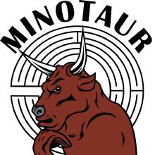

 Minotaur is an open-source software for solving Mixed-Integer Nonlinear Optimization (MINLO) problems. It includes solvers for both convex and nonconvex problems. It can be extended or customized for specific problem types.
Latest stable version is 0.2.1. Download statically linked binaries according to your machine architecture. Solvers are linked to CLP, IPOPT, Filter-SQP and BQPD for solving subproblems.
First install wget, g++, gfortran, pkg-config (pkgconf), make, cmake and
lapack (libatlas-dev) on
your computer. These are readily available on linux distributions. Then
open a terminal and clone or update the source code. To clone github
repository of Minotaur do:
git clone https://github.com/minotaur-solver/minotaur minotaur
cd minotaur
To update the current repository and fetch the recent changes do:
cd minotaur
git pull
'minotaur' directory should have the LICENSE and README.md files. Once you are
in this directory, run the following
commands to compile all third-party libraries.
pacman -Syu
pacman -S mingw-w64-x86_64-gcc mingw-w64-x86_64-gcc-fortran mingw-w64-x86_64-cmake cmake pkgconfig wget autoconf make perl mingw-w64-x86_64-make tar
cd ~
git clone https://github.com/minotaur-solver/minotaur.git
minotaur
cd minotaur/third-party
wget
http://www.ieor.iitb.ac.in/files/faculty/amahajan/minotaur/third-party/minotaur-0.2.3-third-party-win.tar.gz
tar -zxf minotaur-0.2.3-third-party-win.tar.gz
cd ..
mkdir build
cd build
cmake -G "Unix Makefiles"
-DTHIRD_PARTY_PATH:PATH=${HOME}/minotaur/third-party/
-DBUILD_SHARED_LIBS:BOOL=OFF ..
make
make install
Solvers can be run in a terminal or be called through AMPL or Pyomo. They take
.nl files as input. First add
to your PATH, the bin directory where the solvers are installed. Then from the
command line, you can run:
bnb stub.nl
Options can also be provided
bnb --log_level 4 --nlp_engine IPOPT --bnb_time_limit 100 stub.nl
To see all options
bnb -=
To display the version information
bnb -v
You may replace bnb by qg, qpd or glob etc for other solvers.
Minotaur is free to use, modify and redistribute without any restrictions. Please see the license for details.
Queries about using the software may be addressed to the Minotaur mailing list. Other queries can be made to Ashutosh Mahajan, amahajan [at] iitb.ac.in